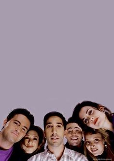
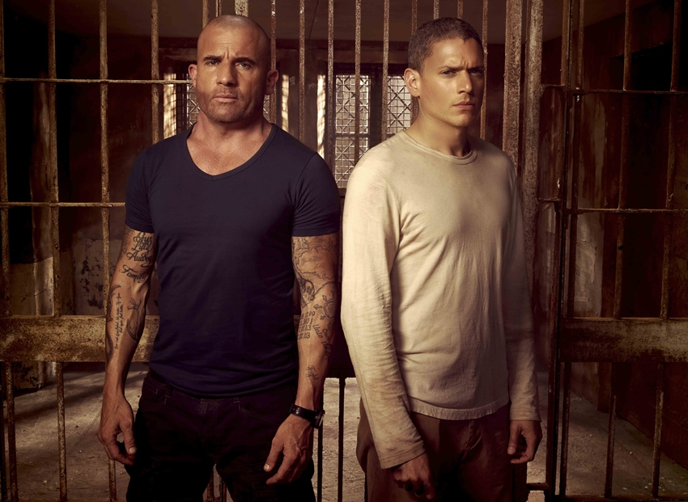
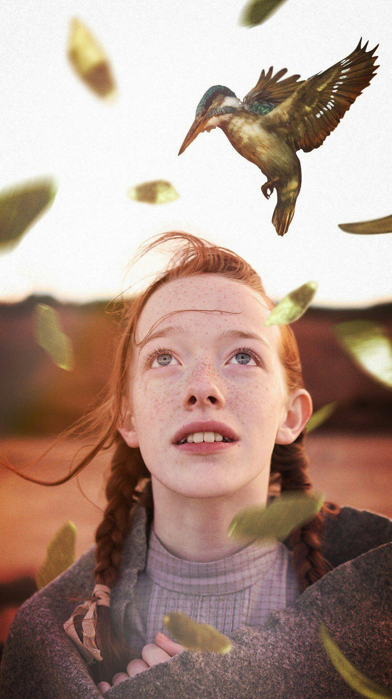
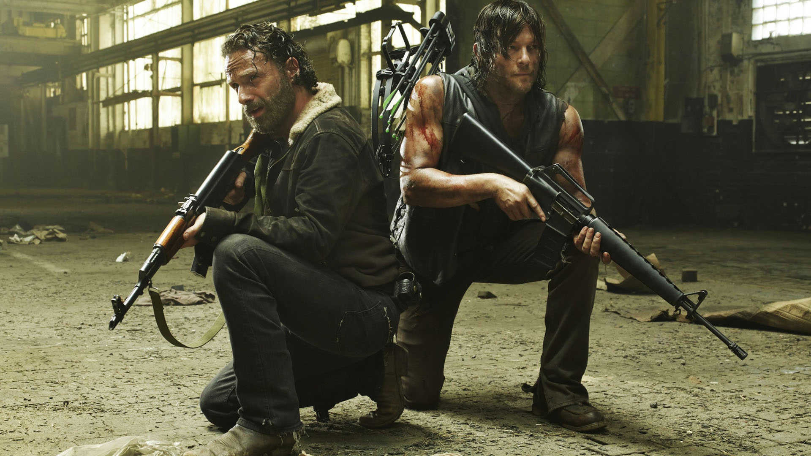
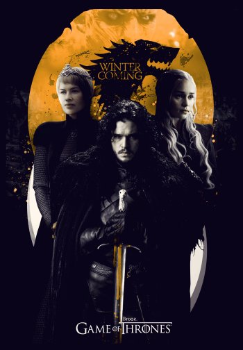

-
Friends
Sinopse
Seis jovens são unidos por laços familiares, românticos e, principalmente, de amizade, enquanto tentam vingar em Nova York.
-
Prison Break
Sinopse
A história gira em torno de Lincoln Burrows, um homem que foi sentenciado à morte por supostamente ter assassinado o irmão da vice-presidente dos EUA, e seu irmão, Michael Scofield, um engenheiro civil, que cria um plano para resgatá-lo da prisão antes que seja executado.
-
Anne With An E
Sinopse
Depois de treze anos sofrendo no sistema de assistência social, a orfã Anne é mandada para morar com uma solteirona e seu irmão. Munida de sua imaginação e de seu intelecto, a pequena Anne vai transformar a vida de sua família adotiva e da cidade que lhe abrigou, lutando pela sua aceitação e pelo seu lugar no mundo.
-
The Office
Sinopse
Esta versão americana de "The Office" é uma comédia que gira em torno do cotidiano de um escritório. Esta sátira descreve a vida dos funcionários da fábrica de papel Dunder Miffin, situada em Scranton, na Pensilvânia. Entre os personagens está Michael Scout (Steve Carell), o gerente regional da empresa.
-
The Walking Dead
Sinopse
Baseado na história em quadrinhos escrita por Robert Kirkman, este drama potente e visceral retrata a vida nos Estados Unidos pós-apocalíptico. Um grupo de sobreviventes, liderado pelo policial Rick Grimes, segue viajando em busca de uma nova moradia segura e distante dos mortos-vivos.
-
Game Of Thrones
Sinopse
Situada nos continentes fictícios de Westeros e Essos, a série centra-se no Trono de Ferro dos Sete Reinos e segue um enredo de alianças e conflitos entre as famílias nobres dinásticas, seja competindo para reivindicar o trono ou lutando por sua independência.